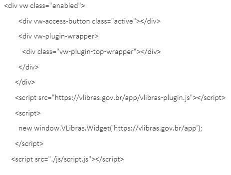

Acessibilidade hoje, amanhã e sempre!
Quero fazer um site acessível a todos, mas por onde começar?
Entendendo um pouco mais sobre o assunto:
O que é acessibilidade na web? de acordo com Cartilha de Acessibilidade na Web fasciculo I disponibilizada pela W3C define que ”Acessibilidade na web significa que pessoas com deficiência podem usar a web. Mais especificamente, a acessibilidade na web significa que pessoas com deficiência podem perceber, entender, navegar, interagir e contribuir para a web. E mais. Ela também beneficia outras pessoas, incluindo pessoas idosas com capacidades em mudança devido ao envelhecimento. Se for aplicada a definição geral de acessibilidade ao ambiente específico da web, pode-se dizer que se trata da possibilidade e da condição de alcance, percepção e entendimento para a utilização, em igualdade de oportunidades, com segurança e autonomia, dos sítios e serviços disponíveis na web."
De acordo com a cartilha das Acessibilidade para Conteúdo Web fasciculo II as diretrizes estão organizadas segundo quatro princípios, que constituem o fundamento da acessibilidade na Web. São eles:
- Percepção: toda informação e componentes da interface devem ser apresentados de uma forma que os usuários possam perceber.
- Operável: os componentes da interface devem ser operáveis. Ou seja, os usuários devem ser capazes de operar a interface e essa não pode requisitar interações que o usuário não pode executar.
- Compreensão: as informações e a interface do usuário devem ser compreensíveis.
- Robustez: o conteúdo deve ser robusto o suficiente para que seja interpretado de forma concisa por uma grande variedade de agentes de usuários, incluindo tecnologias assistivas (ex: leitor de tela).
Deixamos aqui um espaço para você conhecer os diferentes tipos de deficiências para pensar a inclusão de todos.
HTML Semântico
O HTML semântico é a forma de deixar o site com suas informações bem explicadas e compreensíveis para o computador, ajudando até mesmo em sua busca no Google e facilitando o entendimento de leitores de acessibilidade.
É importante utilizar as tags específicas para cada tipo de conteúdo que deseja colocar na página, por exemplo:
A tag <header>
Por exemplo, temos uma tag específica para o cabeçalho da página, a tag <header> , auxiliando para casos em que você possui uma logo ou nome da página em destaque, ou até mesmo título de artigo.
A tag <aside>
Temos também a tag <aside>, essa tag indica conteúdos laterais, geralmente utilizada para menus laterais. Essa tag nos ajuda a definir, até mesmo para a própria compreensão do código, os conteúdos tratados nas laterais da página.
A tag <section>
Com a tag <section>, que define seções de conteúdos — seja dentro de um texto ou conteúdo principal, conseguimos dividir melhor esse conteúdo, deixando-o melhor organizado. Geralmente trabalhamos com um título dentro dessa section, dando ênfase ao conteúdo dela. as <section> conseguem separar os conteúdos de forma diferente das <div>, já que para utilizar um título <h1 a h6> em uma <div> não podemos usar o mesmo titulo para varias <div>. Isso ocorre por que, ao passar pela pesquisa do google, algumas informações da página na busca poderiam se perder. Já com a <section> podemos utilizar o mesmo título, pois as <section> separam seus conteúdos por seções. Portanto, quando pesquisado em mecanismos de busca, não se perdem informações.
A tag <article>
A tag <article>, como o próprio nome diz, é um artigo dentro do conteúdo. Pode ser uma citação de textos externos, ou referências, geralmente também usamos um título para essa tag.
A tag <nav>
A tag <nav> usamos para menus interativos, como por exemplo menus que encaminham a página de “sobre” ou “produtos”. O
A tag <main>
A tag <main> é a tag onde colocamos o conteúdo principal da página. Para melhor uso, só devemos ter um <main> por página, onde iremos apontar o conteúdo de maior relevância, sendo textos, imagens, links, etc.
A tag <figure>
A tag <figure> é utilizada para a inserção de figuras na página. Juntamente com essa tag trabalhamos com o alt, onde descrevemos o que há na imagem, facilitando então a acessibilidade da página, para os leitores de tela. Além disso, se por algum motivo a imagem não abrir, haverá uma descrição dela para quem estiver acessando saber sobre o que se trata.
Ferramenta VLibras
ferramenta gratuita e de código aberto que traduz conteúdos digitais (texto, áudio e vídeo) em Português para Libras
Código HTML para inclusão de leitor de libras no site
Pensando na dislexia
Algumas pessoas que sofrem com a dislexia e não conseguem perceber ou associar a dificuldade como um distúrbio. Esse fato pode causar frustração, sentimento de incapacidade e faz com que se sintam desvalorizados, acarretando ainda inúmeros problemas como ansiedade, depressão e desmotivação (TELES, 2004). Por ser tratar de uma disfunção que está diretamente relacionada a parte do cérebro responsável pela linguística, a leitura acaba sendo um dos processos mais difíceis. Pode-se afirmar que a leitura integra dois processos cognitivos, distintos e indissociáveis: a decodificação e a compreensão da mensagem escrita. Portanto, é preciso ler para que seja possível compreender. A dificuldade de escrever está relacionada ao problema que o disléxico possui em ler e a confusão que essa leitura causa. Dentre as dificuldades da dislexia, a leitura e a interpretação são consideradas mais complicadas, confira algumas das dificuldades:
- Dificuldades com a linguagem e escrita;
- Dificuldades em escrever;
- Dificuldades com a ortografia;
- Lentidão na aprendizagem da leitura;
- Dificuldades com memória de curto prazo e com organização;
- Dificuldades com a língua falada;
- Dificuldades com a percepção espacial;
- Confusão entre direita e esquerda.
- Dificuldades com a percepção espacial;
- Quando usuários disléxicos leem um texto, às vezes experimentam efeitos de distorção visual. Esses efeitos variam em grau de pessoa para pessoa, mas podem tornar a leitura muito mais difícil.
Boas práticas que podemos adotar para projetar interfaces acessíveis a pessoas com dislexia. Não utilizar textos justificados; texto justificado dificulta a leitura não apenas de usuários disléxicos, mas também de não disléxicos. Isso acontece porque são criados grandes espaços irregulares entre as palavras, que quando se alinham um em cima do outro, cria-se um “rio” de espaço branco. Não utilizar parágrafos longos; usuários disléxicos precisam de mais quebras entre os assuntos do que usuários não disléxicos. Quebrar o seu texto, exibindo uma ideia por parágrafo, torna a leitura muito mais fácil. Utilizar fontes semi serifadas ou sem serifas; fontes com serifa tem ganchos nas extremidades dos traçados das letras. Podem parecer decorativos, mas costumam causar problemas de leitura. Portanto, uma fonte semi serifada permitiria aos usuários disléxicos ver o formato das letras mais claramente. A falta desses ganchos aumenta o espaçamento entre as letras e as tornam mais distinguíveis. Utilizar textos em caixa alta somente em títulos e chamadas. Textos escritos em caixa alta, chamam a atenção do usuário se usado em títulos, chamadas ou apenas em uma palavra específica, mas já pensou ler um texto inteiro com letras maiúsculas? Então um texto em caixa alta (uppercase) pode causar desconforto na leitura e ainda dificultar o entendimento das letras, fazendo com que um usuário perca o foco da leitura. Utilizar tamanho de fonte, para textos, de 10 a 15 pontos.
Saiba mais sobre as fontes https://www.dyslexiefont.com/
Ferramentas e soluções simples que ajudam na acessibilidade do usuário
Contrast checker
Verifica o constraste das cores de uma determinada página. https://contrastchecker.com
Color blind
Verifica e simula a página para uma noção prática de como um usuário daltônico enxergaria. https://www.toptal.com/designers/colorfilter
Browse aloud
Ferramenta que adiciona fala, leitura e tradução para websites. https://www.texthelp.com/en-gb/products/reachdeck/browsealoud-is-now-the-reachdeck-toolbar/
Adobe Color - ColorAccessibility
Ferramenta para ajudar na escolha de cores pensando no daltonismo, contraste, problemas de visão, etc https://color.adobe.com/pt/create/color-accessibility